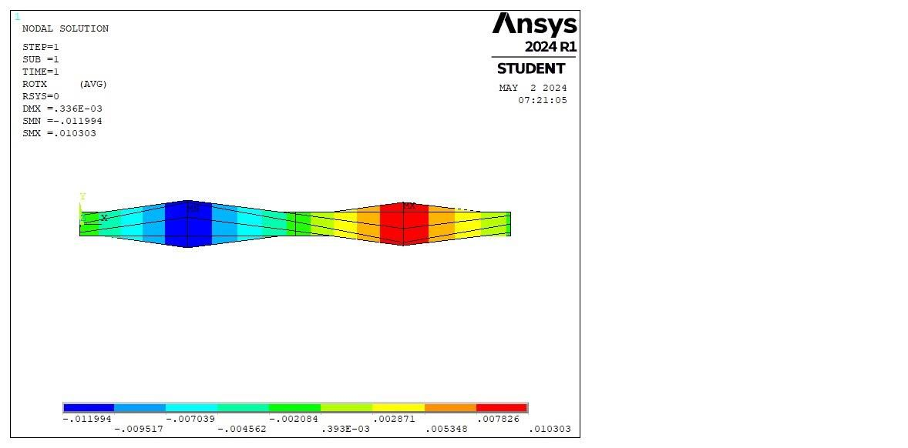
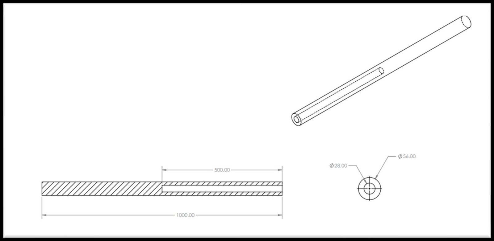

Statically Indeterminate Shaft Design
Summary
What
Statically indeterminate shaft under torsion, designed by hand calculation and three diameter iterations, then checked in ANSYS.
Role
Solved the end reactions of a fixed-fixed shaft by hand, iterated three diameter pairs and checked the final design in ANSYS, in a team of 2.
Results
- Final design of 56 mm outer and 28 mm inner diameter gives a factor of safety of 2.0086.
- ANSYS matched the hand calculation within about 1 percent, with shear stress of 34.9 against 34.85 MPa.
- The 2.5 to 3.5 degree twist requirement could not be met together with the factor of safety, so the design kept the factor of safety (2.0086) at 1.27 degrees.

Problem
A 1 m shaft fixed at both ends carries torques of 2283 N.m at C and 2049 N.m at E. The solid section AD and hollow section DB need whole-number diameters, a factor of safety above 2 on an ultimate shear stress of 70 MPa, and a twist of section CE between 2.5 and 3.5 degrees, with G = 26 GPa.
Method
- Used the total torque balance plus zero total twist (both ends fixed) to solve the end reactions.
- Wrote the section torques, then the twist of section CE and the maximum shear stress as functions of the radius c.
- Ran three iterations with the inner diameter at half the outer diameter: 28/14 mm, 44/22 mm and 56/28 mm.
- Checked the result in ANSYS with a shaft of 5 nodes, ends fixed and torques applied at nodes 2 and 4, comparing reactions, shear stress and twist with the hand values.
Equations
- EQ. 1
TA - TB = 234 N.m, from the torque balance TA - TC + TE - TB = 0 - EQ. 2
phi = sum(T L / (J G)), with phi_AB = 0 for fixed ends - EQ. 3
J_solid = (pi/2) c^4; J_hollow = (pi/2)(c_outer^4 - c_inner^4) - EQ. 4
tau = T c / J; FoS = tau_allowable / tau_max - EQ. 5
phi_CE = 1.368e-8 / c^4 (rad, c in m); tau_max = 765.145 / c^3 (Pa, c in m)
Results
The end reactions are TA = 1201.887 N.m and TB = 967.887 N.m. The 28/14 mm iteration twists 20.4 degrees with a maximum shear stress of 278.8 MPa and a factor of safety of 0.25. The 44/22 mm iteration twists 3.346 degrees, in range, with 71.86 MPa and a factor of safety of 0.974. The final 56/28 mm design twists 1.27 degrees with 34.85 MPa and a factor of safety of 2.0086. ANSYS gives reactions of 1201.9 and 967.89 N.m, a maximum shear stress of 34.9 MPa and a twist of 1.277 degrees.




Validation
ANSYS agrees with the hand calculation to within 0.001 and 0.0003 percent on the reactions, 0.14 percent on shear stress and 0.55 percent on twist.
Limitations
- The 2.5 to 3.5 degree twist requirement could not be met together with the factor of safety. The design kept the factor of safety (2.0086) at 1.27 degrees, and the 44/22 mm iteration that met the twist range had a factor of safety of only 0.974.
- Only three whole-number diameter pairs were tried, all with the inner diameter at half the outer.
- Assumes a linear elastic, homogeneous material.
Tools
- ANSYS
- Hand calculation